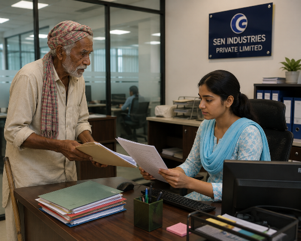
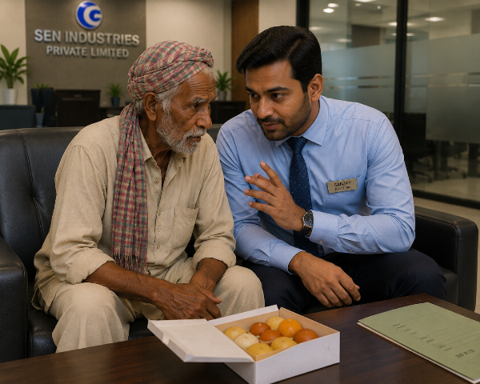
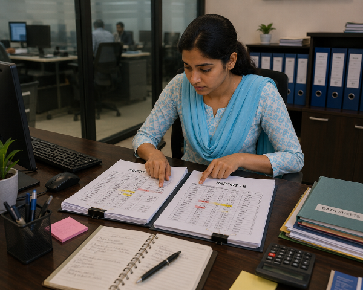
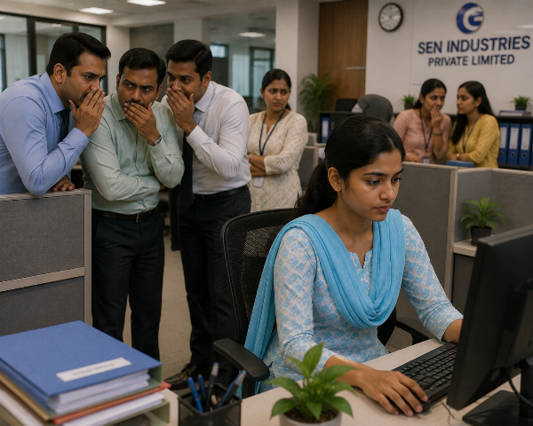

পর্ব ৬
প্রথম ইন্টারভিউ

ভোর পাঁচটা।
অন্য সবাই তখনও ঘুমিয়ে।
মেঘলা নিঃশব্দে উঠে পড়ল।
ঘর ঝাড়ু দিল, বাসন মাজল, রান্না চাপাল, ভাইয়ের ছেলের টিফিন তৈরি করল।
সব কাজ শেষ হতে হতে সকাল আটটা।
সে নিজের ঘরে গিয়ে একটি সাধারণ সাদা সালোয়ার-কামিজ পরল। চুলগুলো সুন্দর করে বেঁধে নিল। ফাইলের মধ্যে সার্টিফিকেটগুলো গুছিয়ে রাখল।
ঠিক তখনই ভাবি শীলা দরজায় এসে দাঁড়াল।
— "এত সাজগোজ করে কোথায় যাচ্ছ?"
— "একটা কোম্পানিতে ইন্টারভিউ আছে।"
শীলা ঠোঁট বাঁকিয়ে হেসে বলল,
— "চাকরি পাওয়া এত সহজ নাকি? দু'দিন ঘুরে নিজেই বুঝে যাবে।"
মেঘলা কোনো উত্তর দিল না।
চুপচাপ বেরিয়ে গেল।
প্রথম কোম্পানিটি ছিল একটি ছোট প্রাইভেট অফিস।
রিসেপশনে নিজের নাম লিখে অপেক্ষা করতে লাগল।
এক ঘণ্টা পর তার ডাক পড়ল।
ঘরে বসে ছিলেন মধ্যবয়স্ক একজন কর্মকর্তা।
তিনি মেঘলার সার্টিফিকেটগুলো মন দিয়ে দেখলেন।
— "আপনার ফলাফল তো বেশ ভালো।"
মেঘলার মুখে অনেক দিন পর একটুখানি হাসি ফুটল।
— "ধন্যবাদ, স্যার।"
কিন্তু পরের মুহূর্তেই লোকটির দৃষ্টি বদলে গেল।
সে ফাইল বন্ধ করে বলল,
— "চাকরিটা আপনাকে দেওয়া কঠিন নয়। তবে অফিসের পরে মাঝে মাঝে আমার সঙ্গে বাইরে দেখা করতে হবে।"
মেঘলা প্রথমে বুঝতেই পারল না।
— "মানে?"
লোকটি মুচকি হেসে চেয়ারে হেলান দিল।
— "সব কথা কি মুখে বলতে হয়? আমাকে খুশি রাখতে পারলে আপনার ভবিষ্যৎও ভালো হবে।"
এক মুহূর্তে মেঘলার মুখ ফ্যাকাশে হয়ে গেল।
সে ধীরে ধীরে নিজের ফাইলটা তুলে নিল।
— "ক্ষমা করবেন, স্যার। আমি চাকরি চাই, নিজের সম্মান বিক্রি করতে নয়।"
এই কথা বলে সে ঘর থেকে বেরিয়ে এল।
অফিসের বাইরে এসে সে কিছুক্ষণ চুপচাপ দাঁড়িয়ে রইল।
তার চোখে জল চলে এসেছিল।
সে ভাবছিল—
"সব অফিস কি এমন?"
ঠিক তখনই তার ফোন বেজে উঠল।
ভাই সুব্রত।
— "ইন্টারভিউ কেমন হলো?"
মেঘলা কিছুক্ষণ চুপ থেকে বলল,
— "হয়নি।"
ওপাশ থেকে দীর্ঘশ্বাস শোনা গেল।
— "ঠিক আছে, আর চেষ্টা কর।"
কিন্তু বাড়ি ফিরে ভাবির কাছে অন্য কথা শুনতে হলো।
— "আমি তো আগেই বলেছিলাম! এত চাকরি যদি থাকত, সবাই বেকার বসে থাকত?"
মেঘলা চুপচাপ নিজের ঘরে চলে গেল।
রাতে বাবার ছবির সামনে বসে সে বলল,
— "বাবা, আমি হার মানব না। একজন খারাপ মানুষ মানেই পৃথিবীর সবাই খারাপ নয়। কোথাও না কোথাও নিশ্চয়ই একটা সৎ মানুষ আছে, যে আমার যোগ্যতাকে সম্মান করবে।"
সে জানত না...
পরদিন আরও বড় একটি কোম্পানি থেকে তার কাছে ইন্টারভিউয়ের ফোন আসবে।
আর সেই ইন্টারভিউ তার জীবনের মোড় ঘুরিয়ে দিতে চলেছে।
চলবে...
পর্ব ৭
বাবার বন্ধুর দরজা

পরদিন সকাল।
মেঘলা আবার চাকরির খোঁজে বেরোনোর প্রস্তুতি নিচ্ছিল।
ঠিক তখনই ভাই সুব্রত পুরোনো একটি ডায়েরি হাতে নিয়ে তার ঘরে ঢুকল।
— "এটা বাবার ডায়েরি। আলমারি গোছাতে গিয়ে পেলাম।"
মেঘলা অবাক হয়ে ডায়েরিটা হাতে নিল।
পাতাগুলো হলুদ হয়ে গেছে।
এক জায়গায় লাল কালিতে লেখা—
"বিনয় সেন—ছোটবেলার বন্ধু। কখনও বিপদে পড়লে ওর সঙ্গে যোগাযোগ করবে। মানুষটা খুব সৎ।"
নিচে একটি ফোন নম্বর।
মেঘলার চোখে জল চলে এল।
মনে হলো, বাবা যেন মৃত্যুর আগেই তার জন্য একটা পথ রেখে গেছেন।
সে অনেকক্ষণ দ্বিধায় রইল।
"এত বছর পরে ফোন করলে যদি চিনতে না পারেন?"
তবুও সাহস করে নম্বরটি ডায়াল করল।
কয়েকবার রিং হওয়ার পর ওপাশ থেকে গম্ভীর গলা।
— "হ্যালো, আমি বিনয় সেন বলছি।"
মেঘলার গলা কেঁপে উঠল।
— "কাকু... আমি মেঘলা... সুধাংশু মুখার্জির মেয়ে।"
কিছুক্ষণ নীরবতা।
তারপর হঠাৎ আবেগভরা কণ্ঠ—
— "সুধাংশুর মেয়ে! কেমন আছ মা? তোমার বাবার কথা আমি প্রায়ই মনে করি।"
মেঘলা আর নিজেকে সামলাতে পারল না।
কাঁদতে কাঁদতে সব ঘটনা খুলে বলল।
অরিন্দমের মৃত্যু...
শ্বশুরবাড়ি থেকে বের করে দেওয়া...
চাকরির জন্য অপমান...
সব।
ফোনের ওপাশে দীর্ঘ নীরবতা।
তারপর বিনয় সেন বললেন,
— "আজ বিকেল চারটায় আমার অফিসে চলে এসো। কোনো প্রতিশ্রুতি দিচ্ছি না। তবে তোমার বাবার মুখের দিকে তাকিয়ে অন্তত একবার তোমার সঙ্গে দেখা করব।"
বিকেল চারটা।
মেঘলা পৌঁছাল সেন ইন্ডাস্ট্রিজ প্রাইভেট লিমিটেড-এর প্রধান কার্যালয়ে।
বড় কাঁচের ভবন।
রিসেপশনে নিজের নাম বলতেই একজন কর্মী সম্মানের সঙ্গে বললেন,
— "স্যার আপনার জন্য অপেক্ষা করছেন।"
মেঘলার বুক ধুকপুক করতে লাগল।
দরজা খুলে ভেতরে ঢুকতেই দেখল, পঞ্চাশোর্ধ্ব এক ভদ্রলোক উঠে দাঁড়িয়েছেন।
তিনি কিছুক্ষণ মেঘলার মুখের দিকে তাকিয়ে রইলেন।
তারপর ধীরে বললেন,
— "তোমাকে দেখে মনে হচ্ছে, যেন তোমার বাবাকেই দেখছি।"
মেঘলার চোখ আবার ভিজে উঠল।
বিনয় সেন নিজের চেয়ারে না বসে, তাকে বসতে বললেন।
তিনি একে একে সব সার্টিফিকেট দেখলেন।
কোনো অপ্রয়োজনীয় প্রশ্ন করলেন না।
শুধু শেষে বললেন,
— "তোমার যোগ্যতা আছে। কিন্তু তার থেকেও বড় কথা, তোমার বাবার সততার কথা আমি জানি। সেই মানুষ মেয়েকে অসৎ শিক্ষা দিয়ে যেতে পারেন না।"
মেঘলা মাথা নিচু করে বলল,
— "আমি শুধু একটা সম্মানের সঙ্গে কাজ করতে চাই, কাকু।"
বিনয় সেন হালকা হেসে বললেন,
— "আগামী সোমবার থেকে তুমি আমাদের কোম্পানিতে যোগ দেবে। তিন মাস শিক্ষানবিশ হিসেবে কাজ করবে। যদি ভালো কাজ করো, স্থায়ী চাকরি পাবে।"
মেঘলা যেন নিজের কানকেই বিশ্বাস করতে পারছিল না।
তার চোখ বেয়ে আনন্দের জল গড়িয়ে পড়ল।
সে উঠে দাঁড়িয়ে বলল,
— "আমি এই উপকার কোনোদিন ভুলব না।"
বিনয় সেন শান্ত গলায় উত্তর দিলেন,
— "এটা উপকার নয়, মা। এটা তোমার প্রাপ্য। তবে একটা কথা মনে রেখো—এই অফিসে সবাই তোমার শুভাকাঙ্ক্ষী হবে না। নিজের সততা কখনও হারাবে না।"
মেঘলা মাথা নেড়ে সম্মতি জানাল।
সে জানত না...
বিনয় সেনের এই কথার মধ্যে লুকিয়ে ছিল এক ভয়ঙ্কর সতর্কবার্তা।
অফিসের এক কোণে বসে থাকা দুর্নীতিগ্রস্ত ম্যানেজার রজত দত্ত তখন কাঁচের জানালা দিয়ে মেঘলার দিকে তাকিয়ে মুচকি হাসছিল।
সেই হাসির অর্থ তখনও মেঘলা বুঝতে পারেনি...
চলবে...
পর্ব ৮
অজানা পরীক্ষক, নতুন পথ

সকাল দশটা।
মেঘলা পরিষ্কার একটি শাড়ি পরে সেন ইন্ডাস্ট্রিজ প্রাইভেট লিমিটেড-এর অফিসে পৌঁছাল।
রিসেপশনের সামনে ইতিমধ্যেই আরও দশ-বারোজন প্রার্থী বসে আছেন।
কারও হাতে মোটা ফাইল, কারও হাতে অভিজ্ঞতার সার্টিফিকেট।
মেঘলা চুপচাপ একটি কোণে বসে নিজের কাগজপত্র গুছিয়ে নিল।
তার মনে একটাই প্রার্থনা—
"আজ যেন একটা কাজ পাই।"
ঠিক তখনই একজন বয়স্ক মানুষ হাতে একটি রেজিস্টার নিয়ে অপেক্ষাকক্ষের ভেতরে ঢুকলেন।
পরনে সাধারণ পোশাক।
দেখে মনে হয় অফিসের কেয়ারটেকার।
তিনি হেসে বললেন,
— "সবাই একটু করে নাম, ঠিকানা আর শিক্ষাগত যোগ্যতা লিখে দিন। স্যার আসতে একটু দেরি হবে।"
সবাই একে একে তথ্য লিখতে লাগল।
ভদ্রলোক প্রত্যেকের সঙ্গে হাসিমুখে দু-একটা কথা বলছিলেন।
কারও কাছে জিজ্ঞেস করলেন,
— "চাকরি পেলে পাঁচ বছর এখানে কাজ করবেন তো?"
কেউ বলল,
— "ভালো বেতন পেলেই থাকব।"
আরেকজন বলল,
— "এর চেয়ে ভালো চাকরি পেলেই চলে যাব।"
ভদ্রলোক শুধু মুচকি হেসে সব লিখে রাখলেন।
মেঘলার সামনে এসে তিনি বললেন,
— "মা, তোমার নাম?"
— "মেঘলা।"
— "এই চাকরিটাই কেন করতে চাও?"
মেঘলা একটু ভেবে বলল,
— "কারণ আমার কাজ দরকার। কিন্তু শুধু বেতনের জন্য নয়। আমি চাই নিজের যোগ্যতায় দাঁড়াতে। যে প্রতিষ্ঠানে কাজ করব, তাকে নিজের প্রতিষ্ঠান মনে করেই কাজ করব।"
ভদ্রলোক আবার জিজ্ঞেস করলেন,
— "যদি কেউ তোমাকে অন্যায় করতে বলে?"
মেঘলা বিনা দ্বিধায় উত্তর দিল,
— "চাকরি হারাতে পারি, কিন্তু নিজের সততা হারাতে চাই না।"
ভদ্রলোক গভীরভাবে তার মুখের দিকে তাকিয়ে রইলেন।
তারপর রেজিস্টারে ছোট্ট একটি চিহ্ন দিয়ে এগিয়ে গেলেন।
আরও কয়েকজন প্রার্থীর সঙ্গে কথা বলার সময় তিনি একই ধরনের প্রশ্ন করলেন।
কেউ বলল,
— "কাজ কম, বেতন বেশি হলেই চলবে।"
কেউ বলল,
— "উচ্চপদস্থ কর্মকর্তাদের সঙ্গে সম্পর্ক ভালো থাকলে দ্রুত পদোন্নতি হয়।"
ভদ্রলোক কারও সঙ্গে তর্ক করলেন না।
শুধু চুপচাপ নোট নিলেন।
এক ঘণ্টা পরে রিসেপশন থেকে ঘোষণা এল—
— "সবাই ইন্টারভিউ বোর্ডে আসুন।"
প্রার্থীরা একে একে ভেতরে ঢুকতে লাগলেন।
মেঘলার ডাক পড়তেই সে দরজা খুলে ভেতরে ঢুকে অবাক হয়ে গেল।
ইন্টারভিউ বোর্ডের মাঝখানের চেয়ারে বসে আছেন...
সেই সাধারণ পোশাকের কেয়ারটেকার!
আজ তিনি স্যুট পরে আছেন।
পাশে বসা একজন কর্মকর্তা উঠে দাঁড়িয়ে বললেন,
— "পরিচয় করিয়ে দিই। ইনি আমাদের কোম্পানির মালিক ও ব্যবস্থাপনা পরিচালক, বিনয় সেন।"
মেঘলা বিস্ময়ে দাঁড়িয়েই রইল।
বিনয় সেন হেসে বললেন,
— "ভয় পেও না। তোমার আসল ইন্টারভিউ অনেক আগেই হয়ে গেছে।"
মেঘলা অবাক হয়ে বলল,
— "মানে?"
বিনয় সেন উত্তর দিলেন,
— "ডিগ্রি, নম্বর আর অভিজ্ঞতা গুরুত্বপূর্ণ। কিন্তু তার চেয়েও গুরুত্বপূর্ণ একজন মানুষের সততা, দায়িত্ববোধ এবং মানসিকতা। অপেক্ষাকক্ষে তোমাদের সবার সঙ্গে যে কথা বলছিলাম, সেটাই ছিল আমার প্রথম পরীক্ষা।"
তিনি টেবিলের ওপর রাখা রেজিস্টারটি বন্ধ করে বললেন,
— "অনেকেই চাকরি চেয়েছে নিজের সুবিধার জন্য। কিন্তু তুমি বলেছ, প্রতিষ্ঠানের স্বার্থকে নিজের স্বার্থের মতো দেখবে। তোমার উত্তর মুখস্থ ছিল না, হৃদয় থেকে এসেছিল।"
বোর্ডের অন্য সদস্যরা সম্মতিসূচক মাথা নাড়লেন।
বিনয় সেন হাসিমুখে বললেন,
— "মেঘলা, অভিনন্দন। আমরা তোমাকেই এই পদের জন্য নির্বাচন করেছি। আশা করি, একদিন প্রমাণ করবে—আজকের সিদ্ধান্ত ভুল ছিল না।"
মেঘলার চোখ ভিজে উঠল।
সে নীরবে বলল,
— "ধন্যবাদ, স্যার। আমি আপনাদের বিশ্বাস রাখার চেষ্টা করব।"
প্রথম কর্মদিবস। সোমবার সকাল।
আজ মেঘলার জীবনের নতুন অধ্যায় শুরু।
ভোর পাঁচটায় উঠে সে আগের মতোই ভাইয়ের বাড়ির সব কাজ শেষ করল।
তারপর ইস্ত্রি করা একটি হালকা নীল সালোয়ার-কামিজ পরল। চুল খোঁপা করে বাঁধল।
অরিন্দমের ছবির সামনে দাঁড়িয়ে বলল,
— "আজ আমার প্রথম চাকরি। তুমি থাকলে খুব খুশি হতে। আমাকে আশীর্বাদ করো।"
ব্যাগে একটি ছোট ডায়েরি আর অরিন্দমের সেই কালো হেলমেটের চাবির রিংটি রেখে সে অফিসের উদ্দেশে বেরিয়ে পড়ল।
সকাল ঠিক ন'টা।
রিসেপশনে নাম লিখতেই একজন কর্মী বললেন,
— "মিস মেঘলা, এই দিকে আসুন। মানবসম্পদ বিভাগে নিয়ে যাচ্ছি।"
সেখানে তাকে পরিচয়পত্র, উপস্থিতির কার্ড এবং কোম্পানির নিয়মাবলী বুঝিয়ে দেওয়া হলো।
কিছুক্ষণ পরে বিভাগীয় ম্যানেজার রজত দত্ত ঘরে ঢুকলেন।
বয়স প্রায় পঁয়তাল্লিশ।
দামি স্যুট, মুখে মিষ্টি হাসি।
তিনি বললেন,
— "ওহ! আপনিই নতুন কর্মী? মিস্টার বিনয় সেন নিজে নিয়োগ দিয়েছেন শুনলাম। খুব ভাগ্য আপনার।"
মেঘলা ভদ্রভাবে উত্তর দিল,
— "ধন্যবাদ, স্যার। আমি মন দিয়ে কাজ শিখতে চাই।"
রজত দত্ত মুচকি হেসে বললেন,
— "কাজ তো শিখবেই... তবে এই অফিসে শুধু কাজ জানলেই হয় না। মানুষকেও চিনতে জানতে হয়।"
কথাটা শুনে মেঘলার কেমন যেন অস্বস্তি হলো।
তার পাশের ডেস্কে বসতেন একজন তরুণী।
হাসিমুখে বললেন,
— "আমি অনন্যা। কোনো সমস্যা হলে আমাকে বলবেন।"
মেঘলার মুখেও হাসি ফুটল।
প্রথমবার মনে হলো, এই অফিসে অন্তত একজন আপন মানুষ আছে।
সারাদিন সে মন দিয়ে কাজ শিখল।
ডেটা এন্ট্রি, ফাইল সাজানো, রিপোর্ট তৈরি—সবই দ্রুত আয়ত্ত করে নিল।
বিকেলের দিকে বিনয় সেন নিজে বিভাগে এলেন।
তিনি কয়েকটি প্রশ্ন করলেন।
মেঘলা আত্মবিশ্বাসের সঙ্গে সব উত্তর দিল।
বিনয় সেন সন্তুষ্ট হয়ে বললেন,
— "খুব ভালো। এভাবেই কাজ করে যাও।"
এই দৃশ্য দেখে কয়েকজন পুরোনো কর্মচারী মুখ চাওয়া-চাওয়ি করল।
একজন ফিসফিস করে বলল,
— "দেখেছিস? মালিক নিজে এসে খোঁজ নিচ্ছেন!"
আরেকজন বলল,
— "বেশিদিন লাগবে না। এত গুরুত্ব পেলে অনেকেরই মাথা ঘুরে যায়।"
দূরে দাঁড়িয়ে সব শুনছিল রজত দত্ত।
তার চোখে ঈর্ষার ছাপ স্পষ্ট।
মনে মনে বলল,
"আজ মালিকের প্রিয় কর্মী... কাল দেখব কীভাবে মাথা নিচু করে আমার সামনে দাঁড়ায়।"
সন্ধ্যায় অফিস ছুটি হলো।
বেরিয়ে যাওয়ার সময় অনন্যা ধীরে বলল,
— "একটা কথা বলব?"
— "বলুন।"
— "রজত স্যারকে যতটা সম্ভব কাজের বাইরে এড়িয়ে চলবেন। উনি বাইরে থেকে যেমন, ভেতরে তেমন নন।"
মেঘলা অবাক হয়ে জিজ্ঞেস করল,
— "মানে?"
অনন্যা চারদিকে একবার তাকিয়ে নিচু গলায় বলল,
— "এখন কিছু বলছি না। সময় হলে সব জানতে পারবেন। শুধু সাবধানে থাকবেন।"
এই বলে সে দ্রুত চলে গেল।
মেঘলা অফিস ভবনের দিকে একবার ফিরে তাকাল।
আজ তার মনে আনন্দও আছে, আবার অজানা এক আশঙ্কাও।
সে জানত না—
যে সততার জন্য কোম্পানির মালিক তাকে চাকরি দিয়েছেন, সেই সততাকেই খুব শিগগিরই কঠিন পরীক্ষার মুখোমুখি হতে হবে।
চলবে...
পর্ব ৯
অদৃশ্য নিয়ম

পরদিন সকাল।
মেঘলা আগের চেয়ে আরও আগে অফিসে পৌঁছাল।
সে লক্ষ্য করল, অফিসের সবাই সময়মতো এলেও কাজ শুরু করার আগে অনেকেই ম্যানেজার রজত দত্তের কেবিনের সামনে গিয়ে দাঁড়াচ্ছে।
কেউ হাসিমুখে শুভেচ্ছা জানাচ্ছে, কেউ আবার ছোট ছোট প্যাকেট হাতে নিয়ে ঢুকছে।
কিছুক্ষণ পর বেরিয়েও আসছে।
মেঘলার কাছে বিষয়টা অদ্ভুত লাগল।
পাশে বসা অনন্যাকে সে আস্তে করে জিজ্ঞাসা করল,
— "সবাই স্যারের ঘরে কেন যাচ্ছে?"
অনন্যা কম্পিউটারের স্ক্রিন থেকে চোখ না সরিয়েই বলল,
— "সব প্রশ্নের উত্তর এখনই জানতে যেও না। এই অফিসে একটা অদৃশ্য নিয়ম আছে।"
— "কী নিয়ম?"
— "যারা বেশি প্রশ্ন করে, তারা বেশিদিন টেকে না।"
মেঘলা আর কিছু বলল না।
দুপুরে বিনয় সেন অফিসে এলেন।
তিনি হঠাৎ কয়েকটি ফাইল দেখতে চাইলেন।
রজত দত্ত আত্মবিশ্বাসের সঙ্গে ফাইলগুলো এগিয়ে দিলেন।
বিনয় সেন কিছুক্ষণ দেখে বললেন,
— "খুব ভালো কাজ হয়েছে।"
মেঘলা অবাক হয়ে দেখল, মালিকের সামনে রজত দত্ত একেবারে অন্য মানুষ।
ভদ্র, শান্ত, হাসিখুশি।
কিন্তু মালিক বেরিয়ে যেতেই তার মুখের ভাব বদলে গেল।
তিনি একজন কর্মচারীকে ডেকে চিৎকার করে বললেন,
— "এই রিপোর্টে একটা কমা ভুল হয়েছে! এত বেতন নিয়ে এই কাজ করো?"
পুরো অফিস নিস্তব্ধ হয়ে গেল।
বিকেলে মেঘলা একটি ফাইল নিয়ে ম্যানেজারের কেবিনে গেল।
দরজায় কড়া নেড়ে বলল,
— "স্যার, আপনি যে রিপোর্টটা চেয়েছিলেন..."
রজত দত্ত ফাইলটা দেখে বললেন,
— "ভালো কাজ করেছ। নতুন হয়েও এত দ্রুত শিখে ফেলেছ!"
তারপর তিনি একটু হেসে বললেন,
— "শোনো, এই অফিসে উন্নতি করতে চাইলে শুধু কাজ জানলেই হবে না। আমার বিশ্বাসও অর্জন করতে হবে।"
মেঘলা শান্তভাবে উত্তর দিল,
— "আমি আমার কাজ দিয়েই সবার বিশ্বাস অর্জন করতে চাই, স্যার।"
এক মুহূর্তের জন্য রজত দত্তের মুখের হাসি মিলিয়ে গেল।
সে বুঝল, মেয়েটি সহজে কারও কথায় চলবে না।
অফিস ছুটির পরে অনন্যা মেঘলাকে বাইরে নিয়ে গেল।
রাস্তার ধারের একটি চায়ের দোকানে দাঁড়িয়ে সে বলল,
— "তুমি আজ ম্যানেজারকে যে উত্তর দিয়েছ, সেটা ঠিক করেছ। কিন্তু সাবধানে থাকবে।"
— "উনি কি সত্যিই এত খারাপ?"
অনন্যা কিছুক্ষণ চুপ করে থেকে বলল,
— "এই অফিসে অনেকেই পদোন্নতি পেয়েছে। কিন্তু সবাই যোগ্যতার জন্য পায়নি। কেউ টাকার জোরে, কেউ অন্য কারণে।"
মেঘলা বিস্মিত হয়ে তাকিয়ে রইল।
ঠিক তখনই রাস্তার ওপারে একটি দামি গাড়ি এসে থামল।
গাড়ি থেকে নেমে রজত দত্ত পাশের একটি পুরোনো মিষ্টির দোকানে ঢুকে গেলেন।
দোকানের সাইনবোর্ডে লেখা—
"মধুময় মিষ্টান্ন ভাণ্ডার"
অনন্যা দোকানটার দিকে তাকিয়ে খুব ধীরে বলল,
— "ওই দোকানটা সাধারণ মিষ্টির দোকান নয়..."
মেঘলা অবাক হয়ে জিজ্ঞেস করল,
— "তাহলে?"
অনন্যা উত্তর দিল না।
শুধু বলল,
— "একদিন নিজেই সব বুঝতে পারবে।"
মেঘলা তখনও জানত না...
এই ছোট্ট মিষ্টির দোকানটাই একদিন কোটি টাকার দুর্নীতির রহস্য উন্মোচন করবে।
চলবে...
পর্ব ১০
পাঁচ হাজার টাকার সন্দেশ
চাকরিতে যোগ দেওয়ার দুই সপ্তাহ কেটে গেছে।
মেঘলা এখন অফিসের বেশিরভাগ কাজই দক্ষতার সঙ্গে সামলাতে পারে।
বিনয় সেনও মাঝেমধ্যে তার কাজের প্রশংসা করেন।
এটাই যেন কিছু কর্মচারীর চোখে বিষ হয়ে দাঁড়িয়েছে।
সেদিন দুপুরে অফিসে হঠাৎ এক ব্যবসায়ী এলেন।
তার হাতে একটি বড় মিষ্টির বাক্স।
তিনি রিসেপশনে বললেন,
— "রজত স্যারের সঙ্গে দেখা করতে চাই।"
কিছুক্ষণ পরে ম্যানেজারের পি.এ. সঞ্জয় বাইরে এসে হাসিমুখে বলল,
— "স্যার কোনো উপহার নেন না। এটা আপনি নিয়ে যান।"
ব্যবসায়ী হতাশ হয়ে বললেন,
— "কিন্তু আমার ফাইলটা খুব জরুরি।"
সঞ্জয় চারদিকে একবার তাকিয়ে খুব আস্তে বলল,
— "স্যার ঘুষ নেন না। তবে মিষ্টি খেতে খুব ভালোবাসেন।"
— "তাহলে?"
— "সামনের 'মধুময় মিষ্টান্ন ভাণ্ডার' থেকে স্যারের পছন্দের সন্দেশ কিনে দিন। বাকিটা আমরা দেখে নেব।"
মেঘলা নিজের ডেস্ক থেকে সব শুনছিল।
তার কানে কথাগুলো অদ্ভুত লাগল।
"সন্দেশ কিনে দিলে ফাইল পাশ হবে?"
অফিস ছুটির পরে কৌতূহল সামলাতে না পেরে মেঘলা সেই মিষ্টির দোকানের সামনে গিয়ে দাঁড়াল।
দোকানটি খুব সাধারণ।
কাঠের কাউন্টার, কাঁচের শোকেস, সাধারণ সাজসজ্জা।
দেখে মনে হবে বহু বছরের পুরোনো দোকান।
সে ভেতরে ঢুকে বলল,
— "এক কেজি সন্দেশের দাম কত?"
দোকানদার হেসে বলল,
— "কোন সন্দেশ, ম্যাডাম?"
— "ভালো মানের যেটা আছে।"
দোকানদার একটি মেনু কার্ড এগিয়ে দিল।
মেঘলা মেনু খুলতেই তার চোখ বিস্ময়ে বড় হয়ে গেল।
গোলাপ-খাস সন্দেশ — ₹৫,০০০ (প্রতি পিস)
রাজশাহী কেশর সন্দেশ — ₹১০,০০০ (প্রতি পিস)
মহারাজা স্পেশাল — ₹২৫,০০০ (প্রতি পিস)
সম্রাট ডিলাক্স — ₹৫০,০০০ (প্রতি পিস)
মেঘলা অবিশ্বাসের সঙ্গে বলল,
— "এগুলো কি সোনা দিয়ে তৈরি?"
দোকানদার শুধু মুচকি হেসে উত্তর দিল,
— "আমাদের নিয়মিত ক্রেতারা কখনও দাম জিজ্ঞাসা করেন না, ম্যাডাম।"
ঠিক তখনই সেই ব্যবসায়ী দোকানে ঢুকলেন।
তিনি কোনো কথা না বলে বললেন,
— "দুটি গোলাপ-খাস দিন।"
দোকানদার বিল লিখলেন—
₹১০,০০০।
লোকটি সঙ্গে সঙ্গে টাকা পরিশোধ করলেন।
তারপর দোকানদার মিষ্টির বাক্সের সঙ্গে একটি ছোট্ট সাদা রসিদ দিলেন।
রসিদের ওপর শুধু একটি নম্বর লেখা—
GK-247
মেঘলা দোকান থেকে বেরিয়ে রাস্তার ওপারে দাঁড়িয়ে রইল।
পাঁচ মিনিট পর সেই ব্যবসায়ী আবার অফিসে ঢুকলেন।
পি.এ. সঞ্জয় রসিদটি দেখে হালকা হাসল।
তারপর বলল,
— "আপনার ফাইল আজই সই হয়ে যাবে।"
মেঘলার বুক কেঁপে উঠল।
সে বুঝতে পারল...
এখানে সন্দেশ নয়, অন্য কিছুর দাম দেওয়া হচ্ছে।
কিন্তু সেই রহস্যের আসল প্রমাণ তখনও তার হাতে নেই।
আর দূরে, নিজের কেবিনের জানালার আড়াল থেকে রজত দত্ত সবকিছু লক্ষ্য করে মৃদু হেসে বলল,
— "যতদিন মানুষ মিষ্টি কিনবে, ততদিন কেউ আমাকে ঘুষখোর প্রমাণ করতে পারবে না।"
চলবে...
আপনার শেষ পঠিত জায়গা স্বয়ংক্রিয়ভাবে মনে রাখা হচ্ছে।